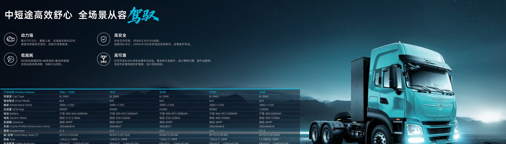

The European Union's heavy-duty vehicle CO2 standards are reshaping global electric truck demand, and exporters of Chinese electric trucks are directly in the path of that shift. The regulation sets a binding curve: minus 45 percent fleet-average CO2 by 2030, minus 65 percent by 2035 and minus 90 percent by 2040, all measured against a 2019 baseline. For fleet operators and government buyers, that curve is not an abstract target; it is a purchase deadline. This guide explains what the EU HDV CO2 rules mean for electric truck demand through 2030 and where the export opportunity sits for a Dongfeng EV truck supplier.
The mechanism is a fleet-average cap on new truck CO2, so every OEM and importer must sell an increasing share of zero-emission units or pay penalties. The TE8L electric tractor with its 350-400 kWh pack and 282-510 kW motor is built for exactly the regional haul and port drayage duty cycle the regulation targets. As the 2030 deadline approaches, importers across Europe and its nearshore neighbors are locking in EV truck volumes early to avoid penalty pricing and to secure scarce depot capacity.
The table below states the binding targets that every exporter must understand before quoting the European market.
| Year | CO2 vs 2019 baseline | What it means for buyers |
|---|---|---|
| 2025 | baseline reporting | fleets begin measuring ZEV share |
| 2030 | minus 45 percent | roughly half new trucks must be ZEV-class |
| 2035 | minus 65 percent | most urban and regional trucks electric |
| 2040 | minus 90 percent | near-total zero-emission new sales |
These are fleet averages, so a single diesel sale is offset only by enough zero-emission volume. The practical effect is a hard pull toward battery-electric and hydrogen trucks, with battery-electric leading because the charging ecosystem is ready now and the total cost of ownership already favors it on urban routes.
Minus 45 percent is not a suggestion; it is a binding cap with financial penalties for non-compliance that run into the thousands of euros per excess gram. Fleets that delay electrification will pay both the penalty and a premium for scarce zero-emission slots as 2030 nears. The smart move is to contract EV truck volume ahead of the curve, which is why 2026-2028 is the window when importers secure the best FOB terms and depot slots. A Dongfeng EV truck at $95,000-120,000 for the TE8L class is a cost-certain alternative to penalty exposure.
Beyond the fleet cap, cities are declaring zero-emission zones that bar or charge diesel trucks for urban access. That doubles the incentive: a fleet must hit the CO2 average and also keep access to city centers. Electric trucks with 200-350 km loaded range and 120-360 kW charging handle urban and regional distribution today, and the quiet sub-70 dB cab is an added advantage for night deliveries. Importers should map the ZEZ list against their customers' delivery points before sizing the EV share.
The cap sits on the manufacturer or importer of record, so a Chinese EV truck exporter selling into the EU carries the compliance math. That actually helps serious buyers: a compliant exporter manages the ZEV ratio and can offer penalty-protected supply agreements. Ask your supplier for a written statement of how the offered volume fits the CO2 curve, and confirm the connector (CCS2) and protocol (ISO 15118) match the European charging network. Non-compliant supply could be throttled or surcharged as 2030 nears, raising your landed cost without warning.
The Morocco electric truck market sits at the edge of Europe with free-trade access and growing local assembly interest, making it a natural nearshore base for EV truck supply into the EU. Moroccan logistics and port operators are adopting electric trucks for drayage and can serve as a staging point for European fleets. For an exporter, Morocco combines lower landed cost with proximity to the regulated market, a structural advantage as the 2030 target bites and slot scarcity grows.
The TE8L tractor's 350-400 kWh pack and 282-510 kW motor fit regional haul and port work, the exact segments the CO2 curve targets first. Its 200-350 km loaded range covers the daily drayage and distribution loop, and 120-360 kW CCS2 charging keeps turnaround under 90 minutes. For heavier long-haul, the 600 kWh TE8P extends range and justifies an MCS bay. Choosing the right pack against the duty cycle is what turns a regulation into a profitable fleet decision rather than a forced, penalty-priced purchase.
Total cost of ownership favors EV trucks once diesel penalties and ZEZ fees are included. A Dongfeng EV truck at $95,000-150,000 avoids the per-gram CO2 penalty, the urban access charge and much of the maintenance burden of a diesel. Energy at 120-360 kW depot charging runs well below diesel per km, and the 8-year / 4,500-cycle CATL LFP warranty de-risks the battery. Lenders in Europe increasingly offer lower rates for compliant zero-emission fleets, improving the financing case further and shortening the payback versus a diesel replacement.
For a Dongfeng EV truck exporter, the EU curve is a sales engine, not a threat. Fleets need compliant volume and will pay for certainty, so the exporter that offers penalty-protected supply, CCS2 connectors and an 8-year / 4,500-cycle warranty wins the bid. Position the TE8L and TE8P against the exact duty cycle the regulation targets, and quote the FOB price with the depot plan attached so the buyer sees a turnkey compliant solution rather than a bare truck that still needs a charging project behind it.
The nearshore play matters too. Supplying via Morocco or another EU-adjacent base cuts landed cost and lead time, letting the exporter meet 2026-2028 volume before the 2030 rush. Exporters that build local service partnerships and spare-parts depots now will own the relationship when penalty pressure peaks. The window is the next two to three years; after 2030 the slot scarcity and penalty exposure do the selling for you, but at a price the prepared supplier captures first.
Buyers should contract EV volume early, lock CCS2 chargers and the 1.5-2.5 MVA feed, and insist on the written CO2-compliance statement from the supplier. Those that act in this window avoid the penalty premium and the 2030 rush for depot capacity. The fleets that plan now will be fully compliant and cheaper to run while competitors are still scrambling for slots and paying penalties on diesel shortfalls, a gap that widens with every step of the binding curve.
The biggest risk is waiting. The 2035 minus 65 percent step is far steeper than 2030, and supply and grid capacity will tighten as everyone converges. Fleets that electrify early lock in depot grid connections (6-18 month lead times) and avoid the 2030 penalty rush. The other risk is spec error: a truck with the wrong connector or too small a pack fails both the regulation and the route. Specify CCS2, size the pack to the duty cycle, and contract volume before the curve closes the window on available, penalty-free supply.
Ready to electrify your fleet? Contact Shaanxi Fenghan Trading — authorized Dongfeng EV truck exporter. WhatsApp: +86 153 1943 1311 | Email: sales@fenghan-trade.com | dongfengevtrucks.com
🌐 Our Network: Fenghan Trade (SAGMOTO/SHACMAN Truck Export) · 4x2 6x4 tractor truck prime mover